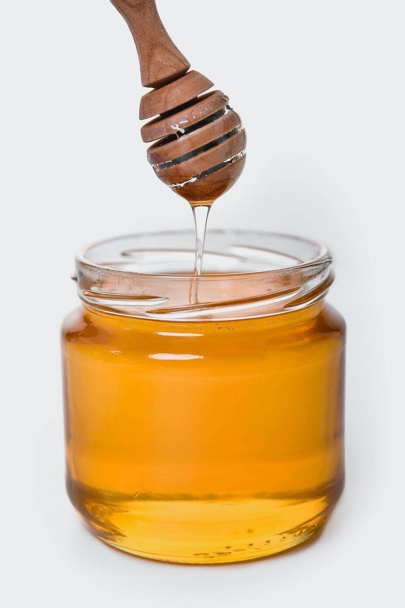

Cosechada en el corazón de la Provincia de Tucumán. Es una miel de
tipo monofloral, de color muy claro, sabor suave y un aroma cítrico
característico.
Miel de algarrobo
La miel de Algarrobo se caracteriza por su sabor sumamente
suave y su color claro, el cual al solidificar se torna totalmente blanca.

Miel de naranja
En la ciudad de San Pedro, existe una importante producción
de cítricos principalmente naranjo muy apreciada, que se caracteriza por su perfume a azahar, sabor intenso y color claro.